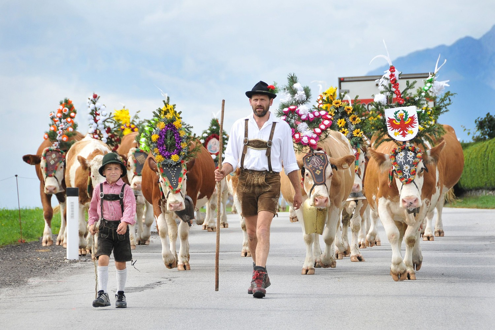

Austrian traditions and California's culture differ in various ways:
1. Festivals: Austria celebrates traditional events like "Krampusnacht" (December) and "Fasching" (Carnival) in February, while California emphasizes diverse, global celebrations like Coachella and Halloween.
2. Food: Austrian cuisine features hearty dishes like "Wiener Schnitzel" and "Sachertorte", while California cuisine is influenced by Mexican food, fresh produce, and health-conscious trends like avocado toast and smoothie bowls.
3. Social Norms: Austria has a more formal, reserved social etiquette, while California's culture is often laid-back, informal, and open.
4. Holidays: Austrians celebrate Christmas with advent markets and traditions like "Christkind". In California, Christmas has more commercial influences, with multicultural and diverse holiday customs.
These differences reflect Austria's deep-rooted traditions compared to California.s modern, diverse cultural blend.
